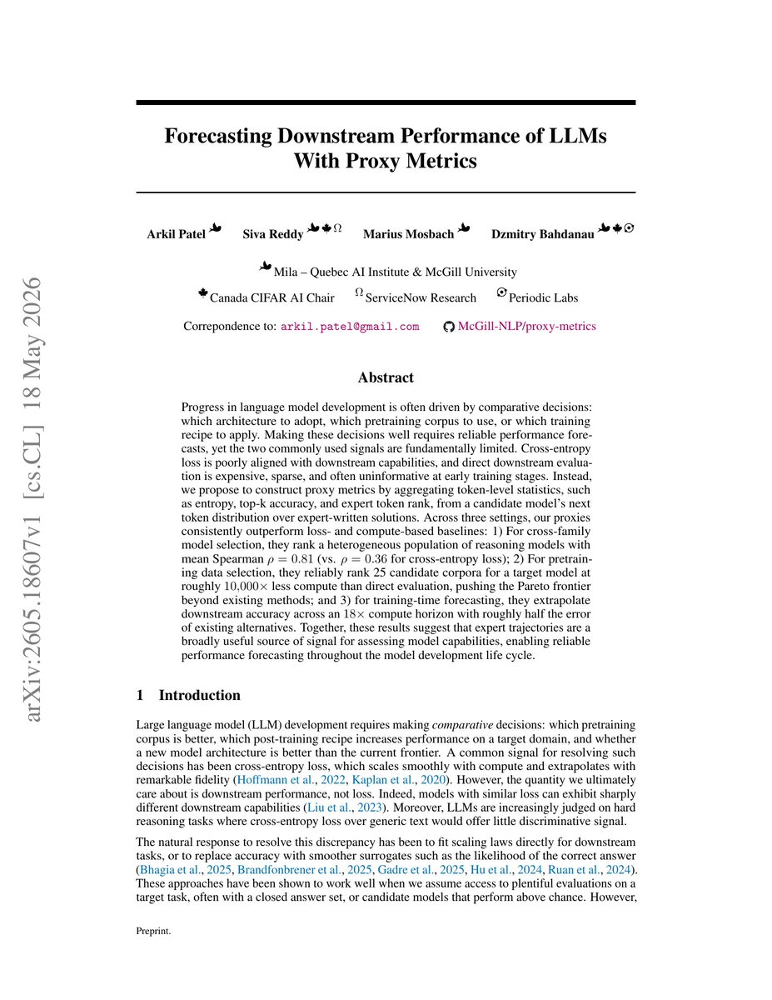
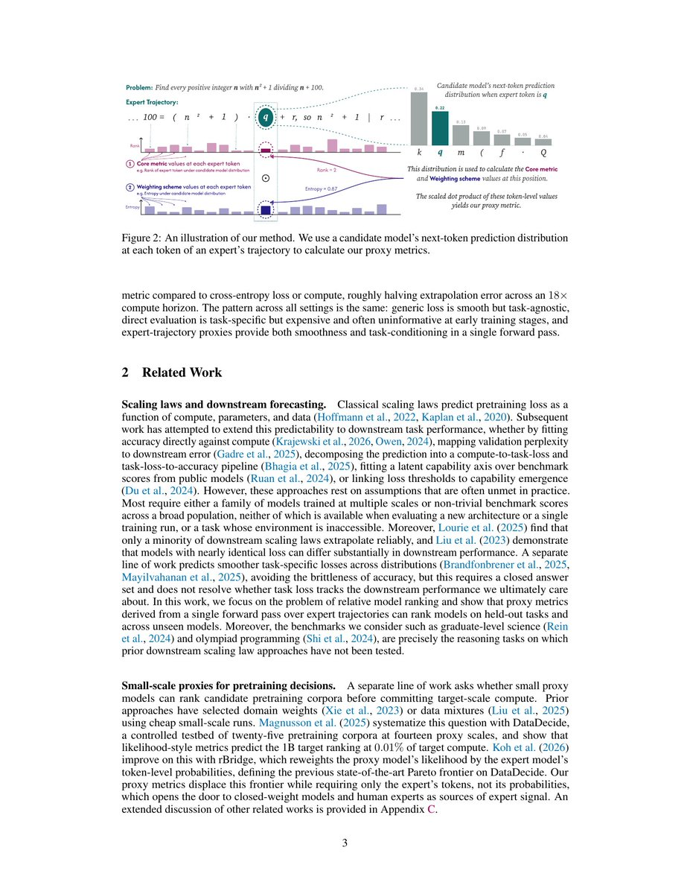
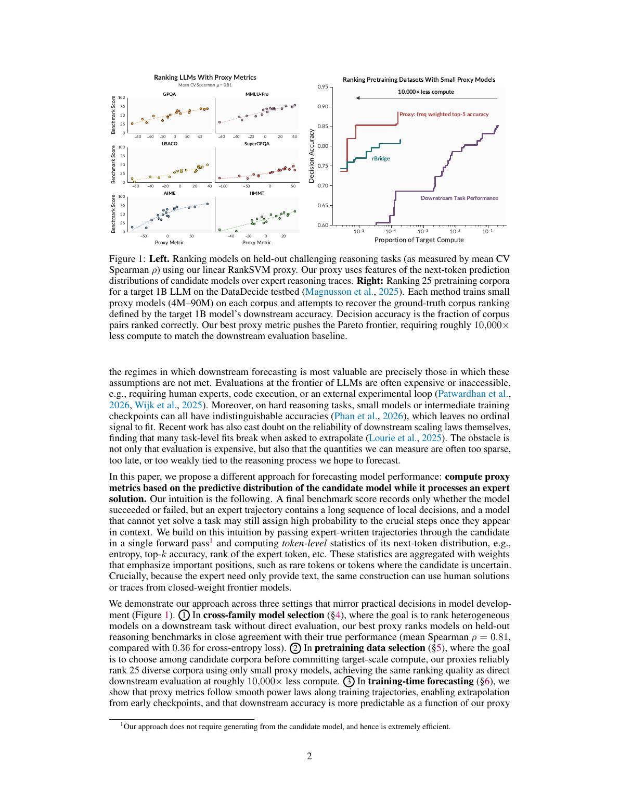
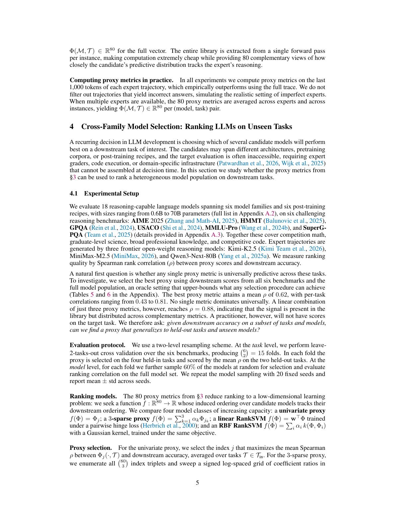
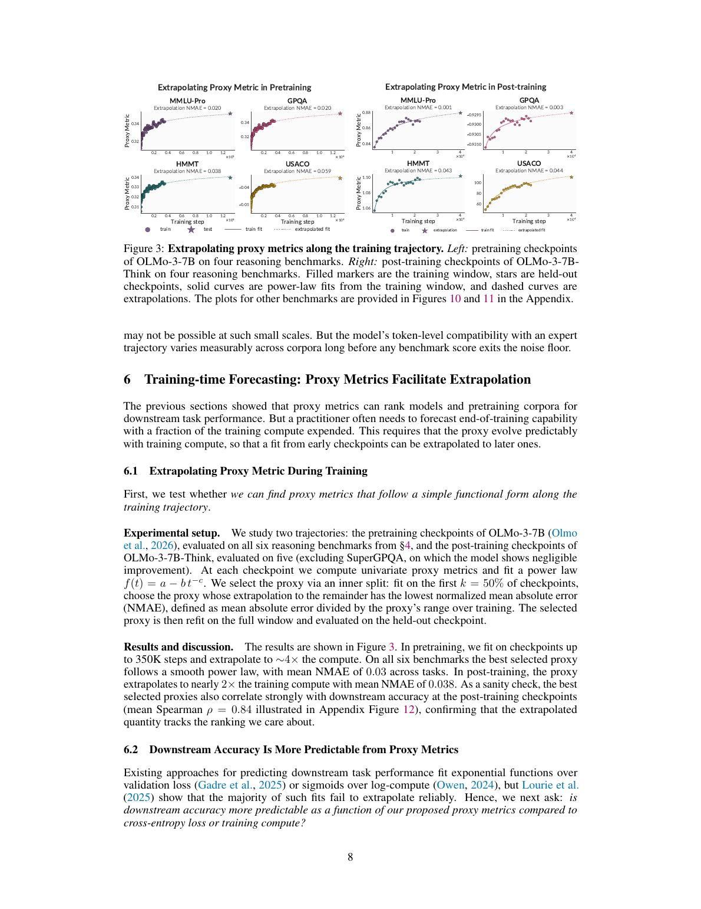

这篇论文的关键词
这项工作把模型评估拆成三个对象：专家轨迹、token 级预测统计、以及能否预测下游表现的加权组合。读它时不要把 proxy metric 当成最终 benchmark，而要把它看成研发阶段的早期排序和外推信号。
三个关键词
token-level statistics 指候选模型在专家前缀下对下一 token 的 rank、entropy、top-k 命中、margin 等局部统计。
expert trajectories 指人类专家或强模型给出的解题过程。它们把稀疏的最终正确率展开成高密度诊断序列。
smooth predictive power 指这些局部统计经加权聚合后，比最终 accuracy 更连续，更适合早期 checkpoint 和小 proxy model。

它要解决的不是“怎么评模型”，而是“怎么提前做研发决策”
模型研发里很多决策必须在目标模型完全训练好之前做：选架构、选预训练数据、选 post-training recipe、是否继续烧算力。但常用信号有明显缺陷。
Cross-entropy loss 太泛
普通预训练 loss 很平滑，适合看训练是否正常，但它衡量的是模型对通用文本分布的平均拟合，不一定反映数学、代码、科学推理这些 downstream 能力。
两个模型 loss 很接近，可能在实际推理任务上差很多。
直接 benchmark 太贵也太稀疏
目标 benchmark 可能需要专家判分、代码执行、长环境交互，成本高；早期 checkpoint 或小 proxy model 还没能力答对，准确率可能长期接近随机水平。
这时 accuracy 不提供稳定排序信号。
下游 scaling law 也不稳
把 downstream accuracy 直接对 compute 或 loss 拟合，在很多任务上外推并不可靠。原因是 accuracy 是阈值化结果，容易突然跳变；loss 又太 task-agnostic。
方法一步一步拆开
输入不是模型自由生成的答案，而是 task instance 加专家轨迹。候选模型只做 teacher-forced forward pass：给它专家前缀，看它下一 token 的分布。

输入与中间对象
- 有一个任务实例 \(x^{(i)}\)，例如一道 AIME 数学题或 USACO 编程题。
- 有专家轨迹 \(y^{(i)}\)，可以是人类解法，也可以是强开源/闭源模型写出的 reasoning trace。
- 候选模型 \(M\) 在每个位置 \(t\) 看到 \(x^{(i)}\) 和专家前缀 \(y_{<t}^{(i)}\)，输出下一个 token 的分布 \(p_M(\cdot \mid x^{(i)}, y_{<t}^{(i)})\)。
为什么这比最终答题更早有信号
小模型可能无法从头生成完整正确解，但当专家已经给出前文时，它可能能识别下一步应该是某个变量名、公式、关键数字或推理连接词。
这种“跟得上专家轨迹”的能力，比最后是否一次性答对更连续、更密集，也更适合早期 checkpoint 和小 proxy model。
| 组成部分 | 具体怎么计算 | 直觉解释 |
|---|---|---|
| Core metrics | cross-entropy、top-k accuracy、entropy、expert token rank、reciprocal rank、margin、wrong-confidence mass 等 | 问的是：模型是不是把专家 token 放在高位？分布是很确定还是很散？如果错了，是不是错得很自信？ |
| Weighting schemes | uniform、probability、expert-disagreement、entropy、inverse entropy、frequency、inverse frequency、Gaussian-NLL kernel | 问的是：哪些 token 更值得看？常见标点和功能词通常没区分度，稀有变量名、关键术语、高不确定位置更可能暴露能力差异。 |
| 80 个 proxy metrics | 10 类 core metrics × 8 类权重 | 不是押注单一指标，而是形成一个低维指标库，再根据任务/模型群体选择或学习组合。 |
三组实验分别评的是什么
论文不是只在一个场景上展示相关性，而是把 proxy metrics 放进模型选择、数据选择、训练外推三个研发决策场景里测试。

| 实验 | 评估对象 | 指标 | 主要结果 | 它证明了什么 |
|---|---|---|---|---|
| 跨模型家族排序 | 18 个 reasoning-capable 模型，覆盖 6 个 base families 和 6 种 post-training recipes；任务包括 AIME、HMMT、GPQA、USACO、MMLU-Pro、SuperGPQA | Spearman rank correlation \( \rho \)：proxy 排名和真实 downstream accuracy 排名是否一致 | FineWeb CE loss 平均 \( \rho=0.36 \)；univariate proxy \(0.54\)；3-sparse proxy \(0.78\)；linear/RBF RankSVM \(0.81\) | 专家轨迹上的 token 统计，比通用 loss 更能排序异构 reasoning 模型。 |
| 预训练数据选择 | DataDecide 的 25 个候选 corpus；用 4M 到 90M 小 proxy models 预测 1B target model 的 OLMES 表现排序 | Decision accuracy：任意两个 corpus 的优劣顺序是否预测正确 | best proxy 在约 \(10^{-5}\) target compute 下达到 0.85 以上 decision accuracy；要用小模型直接 downstream evaluation 达到类似效果，需要约 \(10^4\) 倍更多 compute | 即使小模型还答不对题，也能通过“是否跟得上 expert CoT”判断哪个 corpus 更好。 |
| 训练中外推 | OLMo-3-7B pretraining checkpoints 和 OLMo-3-7B-Think post-training checkpoints | NMAE/RMSE：用早期 checkpoint 拟合 proxy 或 loss，再预测后期 downstream accuracy 的误差 | proxy-to-accuracy fit 在 18× compute horizon 上平均 RMSE 0.024，约为 CE loss 0.059 和 compute 0.055 的一半 | proxy 既有 loss 的平滑性，又因为专家轨迹而带任务条件化，外推漂移更小。 |


这套指标到底在测什么，不在测什么
它不是在评“模型自由解题能力”的完整替代品，而是在测一个更细的东西：候选模型在被放到专家解题路径上时，局部预测分布是否像一个懂这类任务的模型。
局部 reasoning compatibility
如果专家下一步是关键变量、定理名称、代码 token 或数值，强模型应该更容易把它排到 top-k 或给更合理概率。这个信号和“会不会跟着专家走”有关。
任务条件化能力
因为统计是在目标任务的 expert trajectories 上算的，所以比 FineWeb loss 更接近任务。但它仍依赖 expert trace 是否代表真实任务能力。
自由生成与探索能力
teacher forcing 条件下“能预测下一 token”，不等于模型自己能从空白状态规划、探索、纠错并完成任务。它更像诊断信号，不是最终验收。
我的判断：它最有价值的是把 eval 变成“可早期读出的能力显微镜”
这篇工作的实用意义不在于某一个具体 proxy metric，比如 inverse-frequency top-1 accuracy，而在于它提供了一个非常可扩展的评估范式。
真正的新意
过去很多 proxy 要么看通用 loss，要么看小模型直接 benchmark accuracy，要么要求访问 teacher/expert 的 logprobs。这里更灵活：只需要专家写出的离散 token，所以人类专家、闭源强模型、领域专家与 AI 协作生成的轨迹都能成为信号源。
这对前沿模型研发很重要：最稀缺的不是“再跑一个完整 benchmark”，而是在昂贵决策前获得足够早、足够细、足够任务相关的反馈。
| 适合用的场景 | 不该过度外推的场景 |
|---|---|
| 比较多个 candidate checkpoint、recipe、数据混合方案，尤其目标 benchmark 昂贵或早期准确率无信号时 | 把 proxy score 当成最终线上质量、可靠性或安全性的充分证明 |
| 有高质量专家轨迹的数学、代码、科学推理、专业任务 | 专家轨迹质量很差、风格单一，或任务强依赖自由探索和环境互动的 agentic setting |
| 训练中 monitoring：观察某个 downstream 能力相关 proxy 是否沿平滑曲线改善 | 跨架构、跨规模、跨 MoE 系统直接套用同一个 proxy metric，而不做 held-in calibration |
论文自己的边界也要读清楚
结果很有启发，但还不是“一个 proxy 预测所有能力”的定理。作者在限制部分给了几个关键边界。
没有 universal proxy
不同场景选出的最佳 proxy 不一样。跨模型排序、数据选择、具体 benchmark 外推，各自依赖不同 core metric 和 weighting scheme。
训练外推证据范围窄
training-time forecasting 主要基于 OLMo-3-7B 和 OLMo-3-7B-Think 的公开 checkpoint。是否对更多架构、规模、MoE 成立仍需要实证。
任务覆盖还不完整
跨模型排序是 hard reasoning；数据选择和 downstream extrapolation 用 OLMES 多选任务。论文没有证明 open-ended writing、long-context retrieval、agentic evaluation 都适用。
证据边界与资料索引
rosinality 原帖用于确定传播关注点；方法、公式、实验设置和局限以 arXiv 论文与官方 README 为主。所有实验数字按论文报告口径整理，未在本仓库内重新跑 proxy-metric benchmark。
| 材料 | 核验方式 | 用于报告中的作用 |
|---|---|---|
| X 原帖 | 公开线程只有 1 条主帖和 2 张媒体图 | 确定 rosinality 的关注点：用专家轨迹上的 token 统计做能力度量 |
| arXiv 论文 | 短链指向 arXiv:2605.18607，全文 31 页 | 读取方法、公式、实验设置、结果和限制 |
| GitHub README | 读取 McGill-NLP/proxy-metrics README | 核对可复现 pipeline：生成 expert trajectories、计算 proxy metrics、拟合 RankSVM 或 sparse proxy |